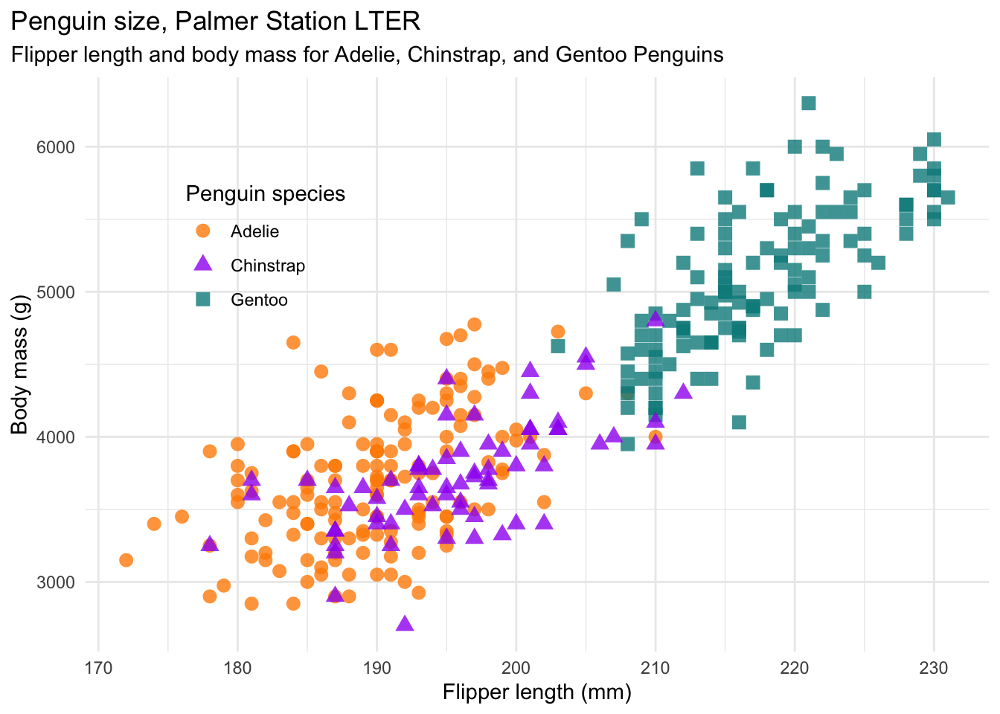
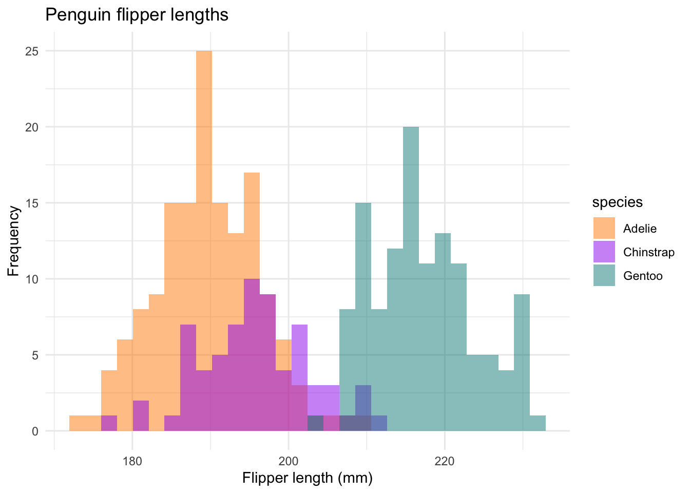

The goal of palmerpenguins is to provide a great dataset for data exploration & visualization, as an alternative to iris.

Installation
You can install the released version of palmerpenguins from CRAN with:
install.packages("palmerpenguins")
To install the development version from GitHub use:
# install.packages("remotes") remotes::install_github("allisonhorst/palmerpenguins")
About the data
Data were collected and made available by Dr. Kristen Gorman and the Palmer Station, Antarctica LTER, a member of the Long Term Ecological Research Network.
The palmerpenguins package contains two datasets.
One is called penguins, and is a simplified version of the raw data; see ?penguins for more info:
head(penguins) #> # A tibble: 6 x 8 #> species island bill_length_mm bill_depth_mm flipper_length_… body_mass_g sex #> <fct> <fct> <dbl> <dbl> <int> <int> <fct> #> 1 Adelie Torge… 39.1 18.7 181 3750 male #> 2 Adelie Torge… 39.5 17.4 186 3800 fema… #> 3 Adelie Torge… 40.3 18 195 3250 fema… #> 4 Adelie Torge… NA NA NA NA <NA> #> 5 Adelie Torge… 36.7 19.3 193 3450 fema… #> 6 Adelie Torge… 39.3 20.6 190 3650 male #> # … with 1 more variable: year <int>
The second dataset is penguins_raw, and contains all the variables and original names as downloaded; see ?penguins_raw for more info.
head(penguins_raw) #> # A tibble: 6 x 17 #> studyName `Sample Number` Species Region Island Stage `Individual ID` #> <chr> <dbl> <chr> <chr> <chr> <chr> <chr> #> 1 PAL0708 1 Adelie… Anvers Torge… Adul… N1A1 #> 2 PAL0708 2 Adelie… Anvers Torge… Adul… N1A2 #> 3 PAL0708 3 Adelie… Anvers Torge… Adul… N2A1 #> 4 PAL0708 4 Adelie… Anvers Torge… Adul… N2A2 #> 5 PAL0708 5 Adelie… Anvers Torge… Adul… N3A1 #> 6 PAL0708 6 Adelie… Anvers Torge… Adul… N3A2 #> # … with 10 more variables: `Clutch Completion` <chr>, `Date Egg` <date>, #> # `Culmen Length (mm)` <dbl>, `Culmen Depth (mm)` <dbl>, `Flipper Length #> # (mm)` <dbl>, `Body Mass (g)` <dbl>, Sex <chr>, `Delta 15 N (o/oo)` <dbl>, #> # `Delta 13 C (o/oo)` <dbl>, Comments <chr>
Both datasets contain data for 344 penguins. There are 3 different species of penguins in this dataset, collected from 3 islands in the Palmer Archipelago, Antarctica.
str(penguins) #> tibble [344 × 8] (S3: tbl_df/tbl/data.frame) #> $ species : Factor w/ 3 levels "Adelie","Chinstrap",..: 1 1 1 1 1 1 1 1 1 1 ... #> $ island : Factor w/ 3 levels "Biscoe","Dream",..: 3 3 3 3 3 3 3 3 3 3 ... #> $ bill_length_mm : num [1:344] 39.1 39.5 40.3 NA 36.7 39.3 38.9 39.2 34.1 42 ... #> $ bill_depth_mm : num [1:344] 18.7 17.4 18 NA 19.3 20.6 17.8 19.6 18.1 20.2 ... #> $ flipper_length_mm: int [1:344] 181 186 195 NA 193 190 181 195 193 190 ... #> $ body_mass_g : int [1:344] 3750 3800 3250 NA 3450 3650 3625 4675 3475 4250 ... #> $ sex : Factor w/ 2 levels "female","male": 2 1 1 NA 1 2 1 2 NA NA ... #> $ year : int [1:344] 2007 2007 2007 2007 2007 2007 2007 2007 2007 2007 ...
We gratefully acknowledge Palmer Station LTER and the US LTER Network. Special thanks to Marty Downs (Director, LTER Network Office) for help regarding the data license & use.
Examples
You can find these and more code examples for exploring palmerpenguins in vignette("examples").
Penguins are fun to summarize! For example:
library(tidyverse) penguins %>% count(species) #> # A tibble: 3 x 2 #> species n #> <fct> <int> #> 1 Adelie 152 #> 2 Chinstrap 68 #> 3 Gentoo 124 penguins %>% group_by(species) %>% summarize(across(where(is.numeric), mean, na.rm = TRUE)) #> # A tibble: 3 x 6 #> species bill_length_mm bill_depth_mm flipper_length_mm body_mass_g year #> <fct> <dbl> <dbl> <dbl> <dbl> <dbl> #> 1 Adelie 38.8 18.3 190. 3701. 2008. #> 2 Chinstrap 48.8 18.4 196. 3733. 2008. #> 3 Gentoo 47.5 15.0 217. 5076. 2008.
Penguins are fun to visualize! For example:


Artwork
You can download palmerpenguins art (useful for teaching with the data) in vignette("art"). If you use this artwork, please cite with: “Artwork by @allison_horst”.

Bill dimensions
The culmen is the upper ridge of a bird’s bill. In the simplified penguins data, culmen length and depth are renamed as variables bill_length_mm and bill_depth_mm to be more intuitive.
For this penguin data, the culmen (bill) length and depth are measured as shown below (thanks Kristen Gorman for clarifying!):

License
Data are available by CC-0 license in accordance with the Palmer Station LTER Data Policy and the LTER Data Access Policy for Type I data.
Citation
To cite the palmerpenguins package, please use:
citation("palmerpenguins") #> #> To cite palmerpenguins in publications use: #> #> Horst AM, Hill AP, Gorman KB (2020). palmerpenguins: Palmer #> Archipelago (Antarctica) penguin data. R package version 0.1.0. #> https://allisonhorst.github.io/palmerpenguins/. doi: #> 10.5281/zenodo.3960218. #> #> A BibTeX entry for LaTeX users is #> #> @Manual{, #> title = {palmerpenguins: Palmer Archipelago (Antarctica) penguin data}, #> author = {Allison Marie Horst and Alison Presmanes Hill and Kristen B Gorman}, #> year = {2020}, #> note = {R package version 0.1.0}, #> doi = {10.5281/zenodo.3960218}, #> url = {https://allisonhorst.github.io/palmerpenguins/}, #> }
Additional data use information
Anyone interested in publishing the data should contact Dr. Kristen Gorman about analysis and working together on any final products. From Gorman et al. (2014): “Individuals interested in using these data are expected to follow the US LTER Network’s Data Access Policy, Requirements and Use Agreement: https://lternet.edu/data-access-policy/.”
References
Data originally published in:
- Gorman KB, Williams TD, Fraser WR (2014). Ecological sexual dimorphism and environmental variability within a community of Antarctic penguins (genus Pygoscelis). PLoS ONE 9(3):e90081. https://doi.org/10.1371/journal.pone.0090081
Data citations:
Adélie penguins:
- Palmer Station Antarctica LTER and K. Gorman, 2020. Structural size measurements and isotopic signatures of foraging among adult male and female Adélie penguins (Pygoscelis adeliae) nesting along the Palmer Archipelago near Palmer Station, 2007-2009 ver 5. Environmental Data Initiative. https://doi.org/10.6073/pasta/98b16d7d563f265cb52372c8ca99e60f (Accessed 2020-06-08).
Gentoo penguins:
- Palmer Station Antarctica LTER and K. Gorman, 2020. Structural size measurements and isotopic signatures of foraging among adult male and female Gentoo penguin (Pygoscelis papua) nesting along the Palmer Archipelago near Palmer Station, 2007-2009 ver 5. Environmental Data Initiative. https://doi.org/10.6073/pasta/7fca67fb28d56ee2ffa3d9370ebda689 (Accessed 2020-06-08).
Chinstrap penguins:
- Palmer Station Antarctica LTER and K. Gorman, 2020. Structural size measurements and isotopic signatures of foraging among adult male and female Chinstrap penguin (Pygoscelis antarcticus) nesting along the Palmer Archipelago near Palmer Station, 2007-2009 ver 6. Environmental Data Initiative. https://doi.org/10.6073/pasta/c14dfcfada8ea13a17536e73eb6fbe9e (Accessed 2020-06-08).